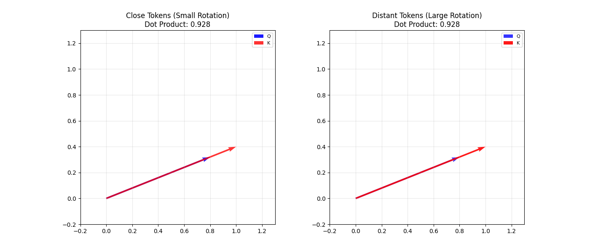
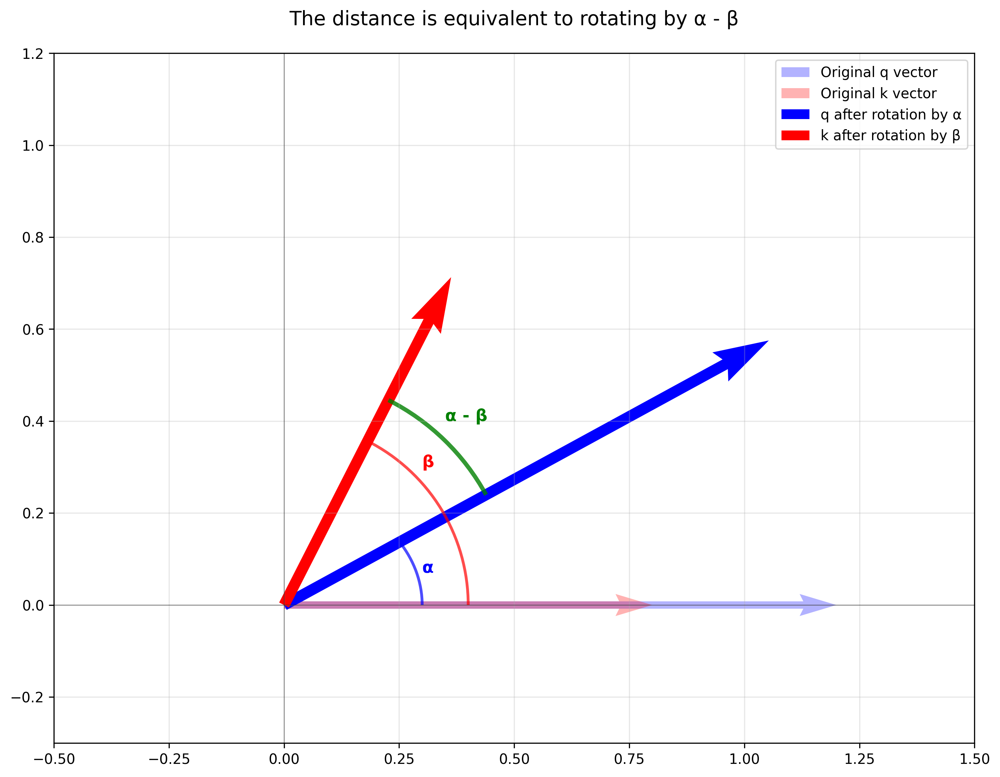
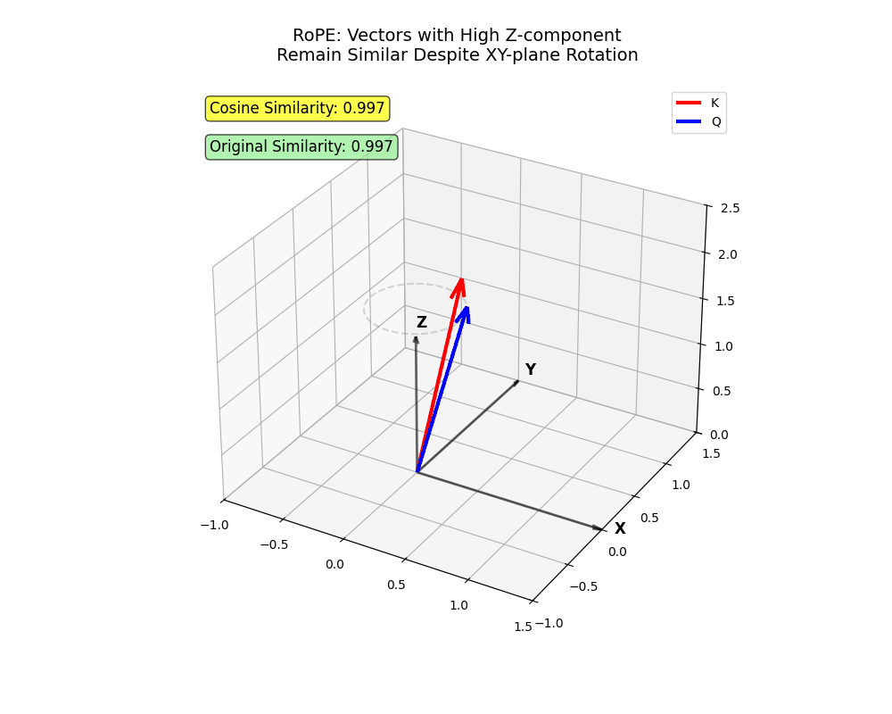
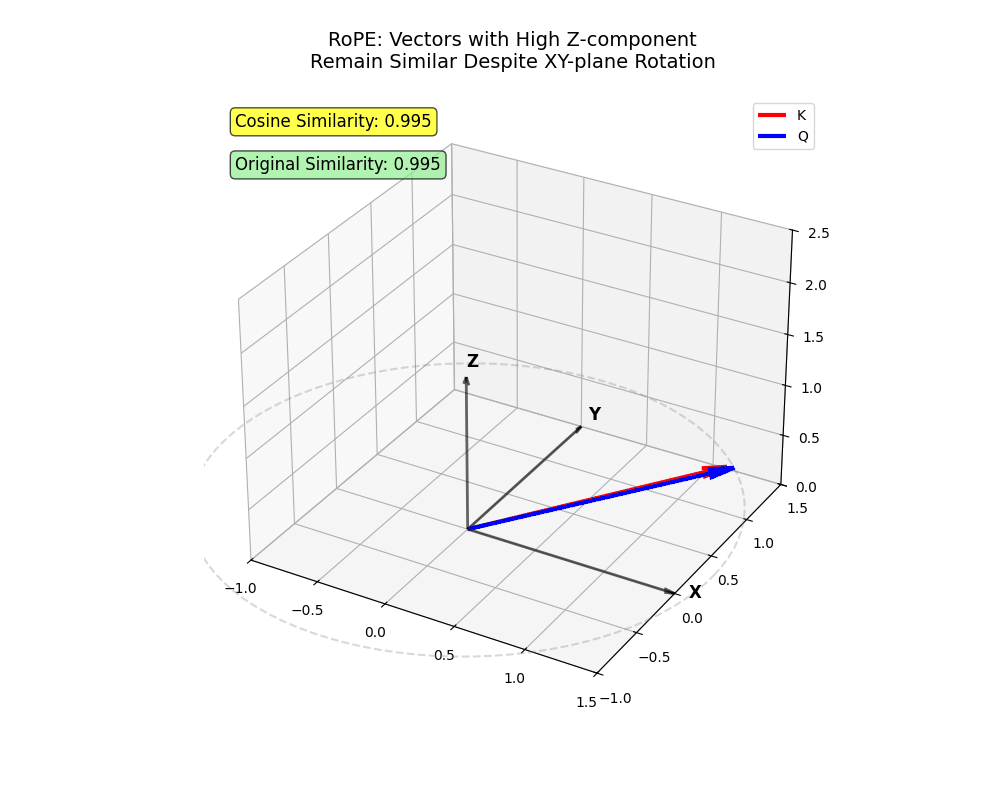
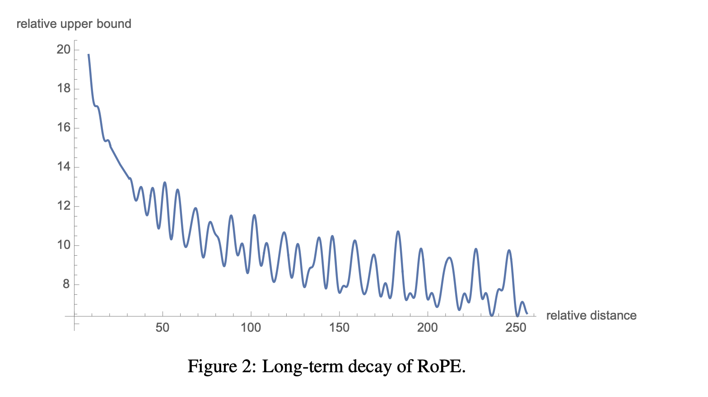
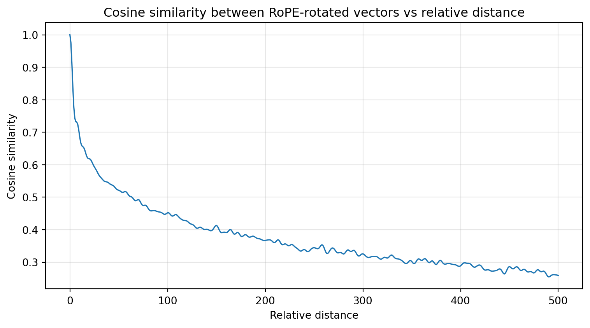

There are plenty of good resources explaining the transformer architecture online, but Rotary Position Embedding (RoPE) is often poorly explained or skipped entirely.
RoPE was first introduced in this paper, and while the mathematical operations involved are relatively straightforward – primarily rotation matrix and matrix multiplications – the real challenge lies in understanding the intuition behind how it works. I’ll try to provide a way to visualize what it’s doing to vectors and explain why this approach is so effective.
I assume you have a basic understanding of transformers and the attention mechanism throughout this post.
RoPE Intuition
Since transformers lack inherent understanding of order and distances, researchers developed positional embeddings. Here’s what positional embeddings should accomplish:
Tokens closer to each other should attend with higher weights, while distant tokens should attend with lower weights.
Position within a sequence shouldn’t matter – if two words are close to each other, they should attend to each other with higher weights regardless of whether they appear at the beginning or end of a long sequence.
To accomplish these goals, relative positional embeddings are far more useful than absolute position embeddings.
Key insight: LLMs should focus on relative positions, which is what truly matters.
If you understand these concepts, you’re already halfway there.
Before RoPE
The original positional embeddings from Attention is All You Need used predefined values (defined by a formula) added to semantic embeddings. While the formula made sense, and RoPE does something similar, mixing semantics and position was confusing-not just for humans, but for LLMs too. Later research confirmed that LLMs were memorizing (overfitting) rather than generalizing positions, causing rapid deterioration when sequence lengths exceeded training data.
One strategy that proved successful in early deep learning was: when unsure how to compute useful features for a neural network, let the network learn them itself! That’s what models like GPT-3 did – they learned their own position embeddings. However, providing too much freedom increases overfitting risks and, in this case, creates hard limits on context windows.
The best approaches focused on modifying the attention mechanism so that nearby tokens receive higher attention weights while distant tokens receive lower weights. The goal was to cleverly modify \(Q\) and \(K\) so their dot products would reflect proximity while preserving hidden states.
Rotation Intuition
RoPE modifies \(Q\) and \(K\) by applying rotations to them.
Let \(q\) be the query projection of a token and \(k\) be the key projection of another. For tokens that are close in the text, minimal rotation is applied, while distant tokens undergo larger rotational transformations.
Imagine two identical projection vectors – any rotation would make them more distant from each other. That’s exactly what we want.

RoPE Rotation Animation
Now, here’s a potentially confusing situation: if two projection vectors are already far apart, rotation might bring them closer together. That’s not what we want! They’re being rotated because they’re distant in the text, so they shouldn’t receive high attention weights. Why does this still work?
In 2D, there’s only one rotation plane (\(xy\)). You can only rotate clockwise or counterclockwise.
In 3D, there are infinitely many rotation planes, making it highly unlikely that rotation will bring two vectors closer together.
Modern models operate in very high-dimensional spaces (10k+ dimensions), making this even more improbable.
Remember: in deep learning, probabilities matter most! It’s acceptable to be occasionally wrong as long as the probabilities are low.
Angle of Rotation
The rotation angle depends on two factors: \(m\) and \(i\). Let’s examine each.
Token Absolute Position \(m\)
Rotation increases as the token’s absolute position \(m\) increases.
I know what you’re thinking: “\(m\) is absolute position, but didn’t you say relative positions matter most?”
Here’s the magic: consider a 2D plane where you rotate one vector by \(\alpha\) and another by \(\beta\). The angular difference between them becomes \(\alpha - \beta\). Their absolute values don’t matter – only the distance does. So for two tokens at positions \(m\) and \(n\), the rotation modifies the angle between them proportionally to \(m-n\).

Relative distance after rotation
For simplicity, let’s assume we’re only rotating \(q\) (this is mathematically accurate since we care about final distances, not coordinates).
Hidden State Index \(i\)
Instead of applying uniform rotation across all hidden state dimensions, RoPE processes two dimensions at a time, applying different rotation angles to each pair. In other words, it breaks the long vector into multiple pairs that can be rotated in 2D by different angles.
We rotate hidden state dimensions differently – rotation is higher when \(i\) is low (vector beginning) and lower when \(i\) is high (vector end).
Understanding this operation is straightforward; understanding why we need it requires more explanation:
It allows the model to choose what should have shorter or longer ranges of influence.
Imagine vectors in 3D (\(xyz\)).
The \(x\) and \(y\) axes represent early dimensions (low \(i\)) that undergo higher rotation. Tokens projected mainly onto \(x\) and \(y\) must be very close to attend with high intensity.
The \(z\) axis, where \(i\) is higher, rotates less. Tokens projected mainly onto \(z\) can attend even when distant.

We apply rotation on the \(xy\) plane. Two vectors encoding information mainly in \(z\) remain close despite rotation (tokens that should attend despite longer distances!)

Two vectors encoding information in \(x\) and \(y\) become very far apart (nearby tokens where one shouldn’t attend to the other).
This structure captures complicated nuances in human language – pretty cool, right?
Once again, I know what you’re thinking: “after too much rotation, they start getting close again”.
That’s correct, but here’s why it still works:
We’re visualizing in 3D, but this actually happens in much higher dimensions.
Although some dimensions grow closer, others that rotate more slowly continue growing farther apart. Hence the importance of rotating dimensions by different angles.
RoPE isn’t perfect – due to its rotational nature, local maxima do occur. See the theoretical chart from the original authors:

Theoretical curve provided by the authors Source: ROFORMER: ENHANCED TRANSFORMER WITH ROTARY POSITION EMBEDDING
The theoretical curve has some crazy bumps, but in practice I found it to be much more behaved:
Code
import numpy as npimport matplotlib.pyplot as pltdef rope_angle_between(q, k, d, base=10000.0): q = np.asarray(q, dtype=np.float64) k = np.asarray(k, dtype=np.float64) D =len(k) i = np.arange(0, D //2, dtype=np.float64) thetas = np.power(base, -2.0* i / D) angles = d * thetas cos_t = np.cos(angles) sin_t = np.sin(angles) q_even = q[0::2] q_odd = q[1::2] q_rot_even = cos_t * q_even - sin_t * q_odd q_rot_odd = sin_t * q_even + cos_t * q_odd b_rot = np.empty_like(q) b_rot[0::2] = q_rot_even b_rot[1::2] = q_rot_odd dot =float(np.dot(k, b_rot)) na =float(np.linalg.norm(k)) nb =float(np.linalg.norm(b_rot)) cosine = dot / (na * nb)return cosinerng = np.random.default_rng(42)D =10_000# even dimensionvec_a = rng.normal(size=D)vec_b = vec_a # initially equal (very close)max_d =500ds = np.arange(max_d +1)angles = np.array([rope_angle_between(vec_a, vec_b, int(d)) for d in ds])plt.figure(figsize=(8, 4.5))plt.plot(ds, angles, lw=1.2)plt.xlabel("Relative distance")plt.ylabel("Cosine similarity")plt.title("Cosine similarity between RoPE-rotated vectors vs relative distance")plt.grid(True, alpha=0.3)plt.tight_layout()plt.show()

Some ideas that occurred to me: clipping the rotation angle so the similarity is a strictly decreasing function (or even picking something other than sin/cos). I wonder if newer papers have explored this approach. I’ve seen clipping being applied to other techniques, but not to RoPE. Anyways, let’s keep moving forward…
Bare in mind that cosine similarity tends to grow (although slowly) as the distance grows a lot past our base (10,000 in this case). A simple solution here is to increase the base, or even let techniques like local attention take care of it.
Bottom line: The LLM learns to encode long-range and short-range meaning influences in different dimensions of the hidden state.
Here are concrete examples:
The LLM processes Python code where an initial transformation is applied to dataframe df. This relevant information should potentially carry over a long range.
Adjectives typically characterize nearby nouns. In “A beautiful mountain stretches beyond the valley”, the adjective beautiful specifically describes the mountain, not the valley, so it should primarily affect the mountain embedding.
The Angle Formula
Now that you understand the concepts and have strong intuition, here are the equations. The rotation angle is defined by \(m \times \theta\), where \(m\) is the token’s absolute position and \(\theta = 10000^{-2(i-1)/d_{model}}\), with \(i \in \{1, 2, \ldots, d/2\}\) representing hidden state dimensions.
When \(i=1 \Rightarrow \theta=1\) (high) and when \(i=d/2 \Rightarrow \theta \approx 1/10000\) (low).
Conclusion
We should find clever ways to inject knowledge into LLMs rather than letting them learn everything independently.
We do this by providing the right operations a neural network needs to process data – attention and convolutions are great examples.
Closed-form equations can extend indefinitely since you don’t need to learn each position embedding.
This is why RoPE provides excellent sequence length flexibility.
The most important property: attention weights decrease as relative distances increase.
This follows the same intuition as local attention in alternating attention architectures.